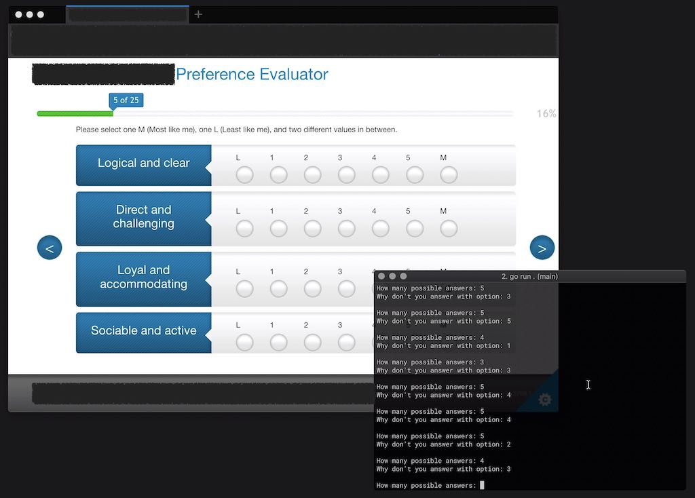

how it came to be
Every organization strives to improve and empower its employees. One of the best ways is, to turn to a professionals in that sphere and ask them for help. And this is what we did at Peaks when we start arranging a personal development sessions.
The first of those sessions had the objective to evaluate our personality and help us understand each other. As part of this training we had to fill in 25 questions (multiple choice).
The questionnaire, and its result, was just part of the whole experience, but this is what I will focus on this post.
the result
When I received the resulting document, it gave a nice color diagram about me and two full pages of my persona’s description. I asked some of my colleagues to read it and give me their honest opinion on how accurate the result is. To make it easy, I asked them to give me percentages of truthfulness, where 0% is “this is definitely not you” and 100% is “yes, this is totally you”.
So this was my score as per my colleagues: - the big guy gave me 70% to 80% (I guess 75% !?) - the critic and person I work most with gave me 85% - the kind soul felt it was only 50% - the scientist calculated 80% - the perfectionist concluded it is 80% - the thinker was unconvinced and judged 60% - the money guy counted 80% - the person who probably knows me most as friend, gave me 90% - the person who knows me for longest, gave me 95%
So my final score is close to 80% (… ok 77.2222222%). The interesting part is that the more the person knew me, the higher the score was. I would have given a really high score myself. Interesting? Not really, unless you know what I did.
what I did?
I was resistant to the idea of a questionnaire telling something or even anything about me. The idea that I will be put in a box, gave me the creeps.
Please don’t get me wrong, I believe we need to do those personal development sessions. I believe we need to work on our communication, we need to spend time trying to understand each other. The only part I was disagreeing is a shining laminated book of my profile.
Fighting between my responsibility and myself, I finally decided to write the simplest possible (pseud-)random generator and used it to fill in all answers.

A week after the training, I shared what I did with my colleagues.
so what now?
For me, the experiment shows that the result will always be applicable for you, no matter from your input. It is like a horoscope.
So how do I come to terms with this?
Maybe in our modern world, everything is for sell. Even personality. In that sense, the people who lead this training are just good salesmen.
Nevertheless more important for me is the realization that if one result fit us all, then it must mean we are much more alike than we think. Maybe the perfect lesson in understanding each other is that we all share same thoughts and aspirations.
There is always the possibility, as pointed out by the scientist, that this is indeed my profile and the result of this experiment is just a victim of circumstances. I might be indeed 80% random.
I still don’t believe the laminated book describes me, but I must also consider the limitation of my own point of view.
If the experiment is a failure, or even if it is a success, I let my colleagues down by not following the rules, as they were asked to. Maybe I need to apologize … and in a way this blog post is exactly this.
My own concession is that even if my colleagues are disappointed by my actions, at least it will be because of who I chose to be.
If you want to read my full profile overview, it is attached below.